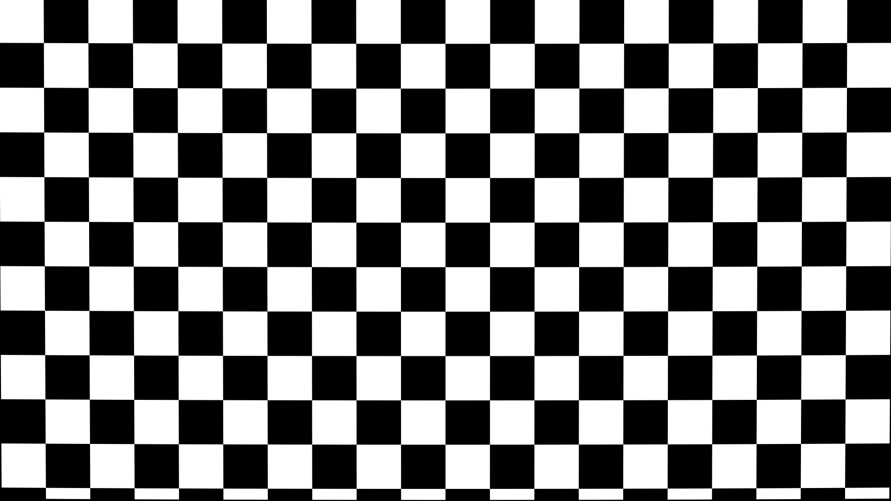

Quick directions
- Load an image or use the test image.
- Pick Point A and Point B.
- Enter the real baseline distance, sensor width, and focus distance.
- Calculate, then save the JSON profile if the result looks right.
Calibration Calculator
Image and Points

Measurements
Required
The physical distance between Point A and Point B on your target.
Use the active imaging width from camera specs.
Distance from the camera/sensor plane to the calibration target.
Optional precision inputs
Optional. Used for vertical angle of view.
Optional. Leave this at 0 unless you measured the no-parallax point.
Results
Measurement Confidence
Calculate focal length to see confidence feedback.
- Warnings and cautions will appear here after calculation.
Review inputs and advanced details
Teaching guide
Learn the Calibration Workflow
Open only the sections you need. The calculator above remains the primary tool.
How to capture a calibration image
- Use a tripod or locked camera position.
- Keep the target flat and visible, with two measurable high-contrast points.
- Use enough resolution that point selection is precise.
- Record focus distance from the sensor plane to the target.
How to choose good points
Pick two points that are sharp, high-contrast, and separated by a known physical distance. Wider spacing generally improves precision because one-pixel picking errors matter less.
How to measure sensor width
Use the active sensor width in millimeters from camera documentation or reliable sensor-size references. This value anchors the focal length calculation.
What is entrance pupil offset?
Entrance pupil offset is the distance from the sensor plane to the no-parallax point of the lens. Leave it at 0 unless you measured it with a nodal slide or similar rig.
Basic formula
Advanced TPS / VFX notes
Effective focal length helps match field of view and scale for miniature photography, stop-motion passes, matchmoving, and CG camera reconstruction. Distortion and lens breathing are not solved by this single-frame calculator; capture multiple focus distances for more complete mapping.